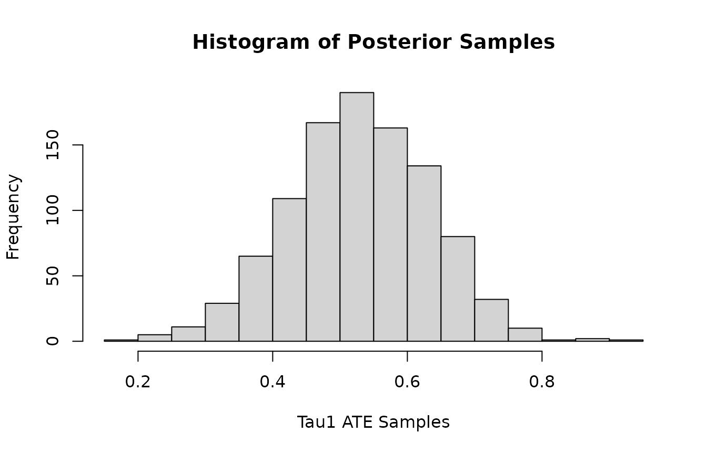
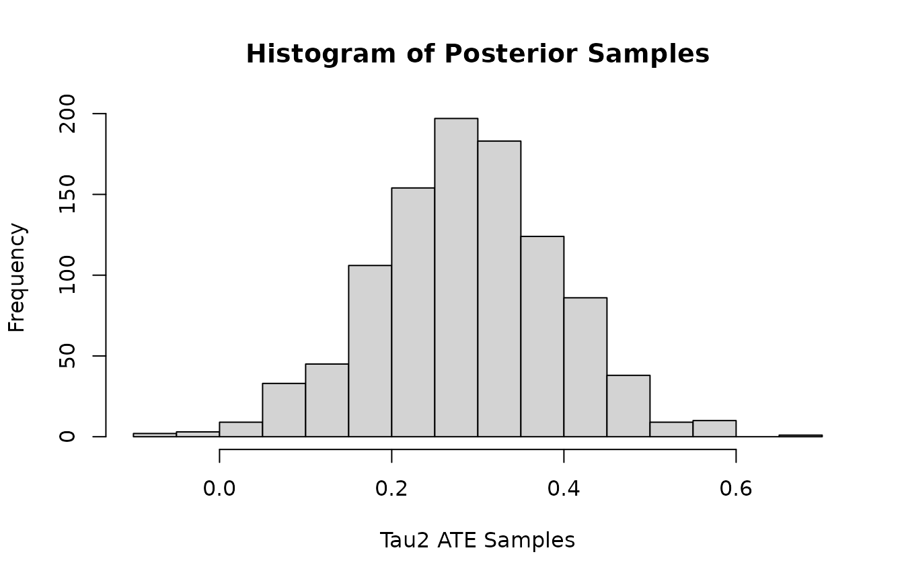

Quick-Start Guide
quick-start.RmdTo get started quickly, and test everything is working properly, here is a simple example showing how to use the package with the default hyper-parameter settings. For more details on the hyper-parameters and other guides, see the other examples.
Fitting The Model
#Load the mvbcf package
library(mvbcf)
#set seed
set.seed(101)
#Create some synthetic data
#number of observations
n<-500
#number of covariates
p<-5
#matrix of covariates
X<-matrix(runif(n*p), nrow=n)
#The outcome under control for y1 and y2
mu1<-3*X[,1]-4*X[,3]^2
mu2<-4*X[,1]+1*X[,3]^2-2*X[,5]
#The effect of receiving treatment on y1 and y2
tau1<-1*X[,1]
tau2<-0.6*X[,1]
#The probability of receiving treatment (true propensity score)
true_propensity<-(X[,2]+X[,3])/3
#Treatment status
Z<-rbinom(n, 1, true_propensity)
#The observed outcomes
y1<-mu1+Z*tau1+rnorm(n, 0, 1)
y2<-mu2+Z*tau2+rnorm(n, 0, 1)
Y<-cbind(y1, y2)
mvbcf_mod <- run_mvbcf(X,
Y,
Z,
X)Check Convergence
Quick look at convergence of posterior of and (The residual variance corresponding to outcome variables and ).
plot(mvbcf_mod$sigmas[1,1,], type="l", ylab="Sigma11 Samples")
plot(mvbcf_mod$sigmas[2,2,], type="l", ylab="Sigma22 Samples")Look at Average Treatment Effect (ATE) Posterior
Histogram of posterior samples of ATE (Average Treatment Effect) for and .
hist(colMeans(mvbcf_mod$predictions_tau[,1,]),
xlab="Tau1 ATE Samples",
main="Histogram of Posterior Samples")
hist(colMeans(mvbcf_mod$predictions_tau[,2,]),
xlab="Tau2 ATE Samples",
main="Histogram of Posterior Samples")
Look at Model Predictions
Get predicted , , and predictions, then compare with ground truth.
mu1_preds<-rowMeans(mvbcf_mod$predictions[,1,])
mu2_preds<-rowMeans(mvbcf_mod$predictions[,2,])
tau1_preds<-rowMeans(mvbcf_mod$predictions_tau[,1,])
tau2_preds<-rowMeans(mvbcf_mod$predictions_tau[,2,])
y1_preds<-rowMeans(mvbcf_mod$predictions[,1,]+Z*mvbcf_mod$predictions_tau[,1,])
y2_preds<-rowMeans(mvbcf_mod$predictions[,2,]+Z*mvbcf_mod$predictions_tau[,2,])
plot(mu1, mu1_preds, main="Predicted vs. True Values", xlab="Mu1", ylab="Mu1 Predictions")
abline(0,1)
plot(tau1, tau1_preds, main="Predicted vs. True Values", xlab="Tau1", ylab="Tau1 Predictions")
abline(0,1)